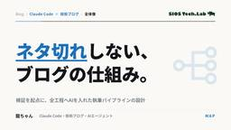
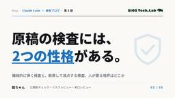
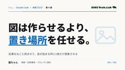
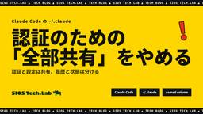

SIOS Tech Lab
https://tech-lab.sios.jp
サイオステクノロジーのエンジニアが クラウド、OSS、認証に関する様々な情報を提供します。
フィード

Claude Codeと書く技術ブログ：ネタ切れしない仕組みの作り方
SIOS Tech Lab
「ネタを探してから書く」ではなく「検証してから記事にする」逆順の設計が、ネタ切れを防ぐ根本策。調査・執筆・レビュー・SEO・図の全工程にAIを入れた実践フロー。Claude Codeと書く技術ブログ：ネタ切れしない仕組みの作り方 first appeared on SIOS Tech Lab.
3日前

技術ブログのタイトルとSEOは、書いた後にAIで詰める
SIOS Tech Lab
タイトルやメタ、SEOはエンジニアが一番苦手な工程。だからこそ書いた後にAIへ寄せます。競合のタイトルの付け方を調べるエージェントと3案を出すSEOエージェントを連鎖させ、採るか削るかは人間が決める。この記事のタイトル自体をその手順で決めた実例つきで解説します。技術ブログのタイトルとSEOは、書いた後にAIで詰める first appeared on SIOS Tech Lab.
3日前

技術ブログの公開前チェックをAIに任せる：機械が弾き、人が裁く
SIOS Tech Lab
公開前チェックをAIに任せると、0/1で弾けるリスク検査は無人化でき、批評は採否を人が握る。過剰検出を潰す判定軸と実出力つきで、機械と人の境界を書きます。技術ブログの公開前チェックをAIに任せる：機械が弾き、人が裁く first appeared on SIOS Tech Lab.
3日前

ブログの図は「どこに入れるか」をAIに決めさせる
SIOS Tech Lab
図を作るのはAIでできるようになりました。でも残っているのは「どこに入れるか」の判断です。記事を丸ごと読ませて息が詰まる所を探させ、1枚だけ提案させる。実プロンプトと、3本の記事に当てた実出力つきで解説します。数を揃えさせない設計が効くのか、正直な結果も書きました。ブログの図は「どこに入れるか」をAIに決めさせる first appeared on SIOS Tech Lab.
3日前

技術ブログで自分の文体をAIに再現させて時短を目指す
SIOS Tech Lab
AIに自分の文体で書かせると、アウトラインの空白を勝手に埋めて中身が捏造されます。声メモで塞ぐと軽くなりますが消えません。実出力つきで正直に解説します。技術ブログで自分の文体をAIに再現させて時短を目指す first appeared on SIOS Tech Lab.
3日前

技術ブログの手戻りが消える、アウトラインのAIレビュー
SIOS Tech Lab
生成AIに丸投げしても、書きたかった記事にはなりません。誰に・どの角度で書くかを決めずに投げているからです。技術ブログはアウトライン段階で、AIエージェント2体に角度と読者を検算させる。AIは材料と問いを出し、答えは人間が持つ。書き上げてからの手戻りを防ぐ使い方を実出力つきで解説します。技術ブログの手戻りが消える、アウトラインのAIレビュー first appeared on SIOS Tech Lab.
3日前

Claude Codeの~/.claude、どれを共有してどれを分ける？
SIOS Tech Lab
~/.claude の中身を更新頻度で仕分け。認証は共有したまま .claude.json と履歴だけプロジェクトごとに分け、コンテナの再ビルドでも再ログイン不要にする実装（CLAUDE_CONFIG_DIR / named volume）を解説。Claude Codeの~/.claude、どれを共有してどれを分ける？ first appeared on SIOS Tech Lab.
3日前
Claude Codeをジムに連れ出したらトレーナーになっていた
SIOS Tech Lab
ジムのトレーナーをClaude Codeにやらせている話。殴り書きを投げるだけでメニューも記録も向こうが用意します。フォームもDBも作らずに回るなら、個人開発は作る順番が逆になるのかもしれない、という仮説を書きました。Claude Codeをジムに連れ出したらトレーナーになっていた first appeared on SIOS Tech Lab.
3日前

Velero実践：クラスターリソースのバックアップ
SIOS Tech Lab
はじめに 前回は、KubernetesのバックアップツールであるVeleroのインストールと、MinIOを保存先とした初期設定について解説しました 。 前回のハンズオンが終わっていれば、環境構築が完了し、Veleroサー ...Velero実践：クラスターリソースのバックアップ first appeared on SIOS Tech Lab.
4日前

Claude Code のテストゲートが編集ゼロで12分！？Stop hook が「黙って効かなくなる」まで
SIOS Tech Lab
はじめに こんにちは！サイオステクノロジーのなーがです。 前回、Claude Code のサブエージェントが勝手に多段委譲してトークンを溶かす問題を、hooks で機械的に止めた話を書きました。「プロンプトでのお願いは守 ...Claude Code のテストゲートが編集ゼロで12分！？Stop hook が「黙って効かなくなる」まで first appeared on SIOS Tech Lab.
4日前